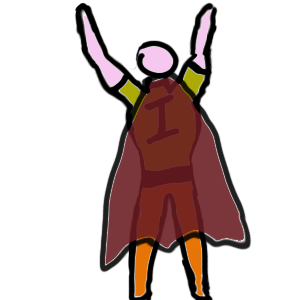

Play to Bounty apresenta:

Corona's Game!
Jogo no estilo batalha de naves estilizado para o tema mais atual, pandemia do novo Corona Virus.
Construído usando a linguagem Java e a biblioteca LibGDX.
Trabalho de avalição de semestre do curso de Tecnologia de Design de Jogos Digitais
Faculdade de Tecnologia de São Paulo - Fatec Carapicuíba
Site: brunomestieri.github.io/CoronasGame
Repo: github.com/Brunomestieri/CoronasGame